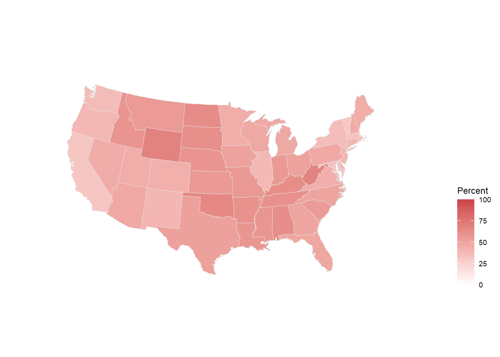
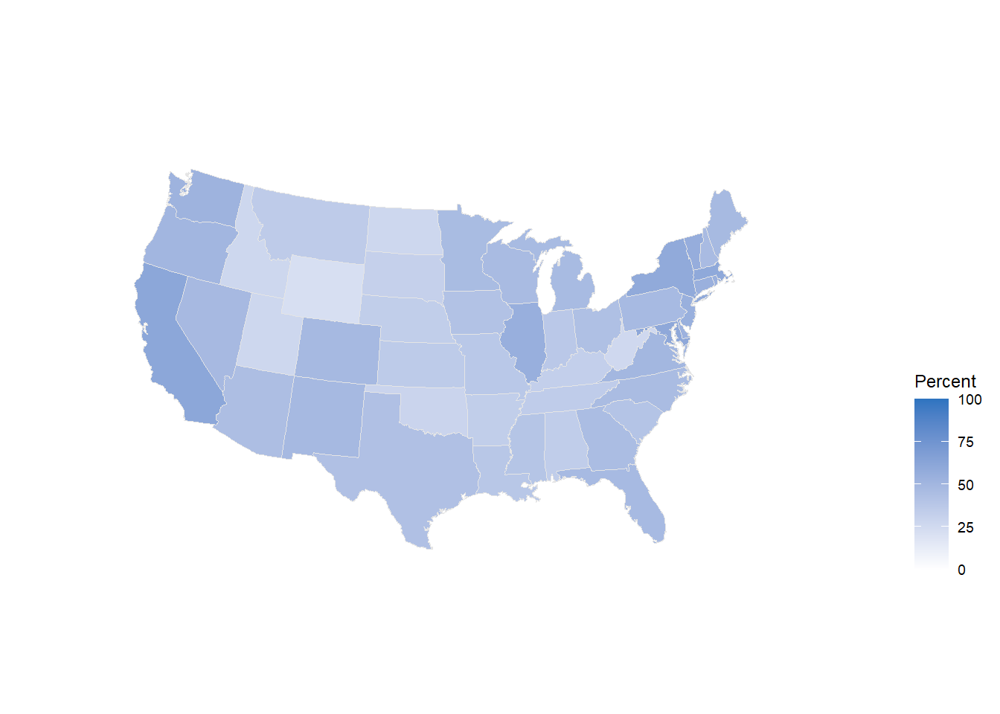

# Load the libraries
library(tidyverse)
library(rvest)8 Web Scraping and Map Making
At this point in the course, we’ve covered the essentials of statistical programming in R from data wrangling to implementing methods for inference. Now we turn to some more specialized tools for answering more specific questions: web scraping and maps. Ordinarily, we wouldn’t combine these topics, but the plebiscite conducted this past week via Google Forms resulted in a tie requiring us to address them both. So we shall.
Let’s be clear about what we are talking about first though. Web scraping is simply the taking of data from web pages online. Its useful for those tricky cases where some website has some desirable data posted somewhere, but it doesn’t come in one of those nice, pre-packaged formats that we’ve grown to expect (like a CSV or an Excel spreadsheet). This can be for a variety of reasons: the creator didn’t think someone would be interested in using their data; they didn’t have the wherewithal to post it in an accessible format; they wanted people to read it, but don’t want someone to use it; or, perhaps they just wanted to give us a challenge. The third case poses some ethical questions, which we’ll discuss briefly.
Choropleth maps, the type of map mentioned in the poll, on the other hand, are a form of data visualization. More specifically, they are a type of map in which some statistic is summarized across some unit of geography, the values for which are displayed via some visual scale (usually color). The results can be attractive and they can convey a large amount of information quickly. They’ve become popular in media these days, especially around election times in major news publications. We’ll take the liberty of discussing other types of maps, which might lack a scaled overlay, here as well.
8.1 Web Scraping
As you might have noticed in your years of browsing, websites are diverse in form and content. Thankfully, however, they all follow some basic rules, chief amongst which is the requirement that they use HTML (HyperText Markup Language). HTML is a text-encoding language which provides the structure and content of websites. It looks something like this in its raw form:
<!DOCTYPE html>
<html>
<body>
<h1>My First Heading</h1>
<p>My first paragraph.</p>
</body>
</html>When you navigate to a website, your browser automatically translates the underlying HTML into the formatted version you are accustomed to seeing in your daily browsing. Websites use other languages to display information as well, such as JavaScript, which allows for dynamic interaction with web pages, or CSS, which helps ensure consistent formatting. HTML remains the core language for web page browsing however.
Great, so web pages are generally made of HTML (along with content served up in other languages) - so what? Well, when a web page has data that we want it is usually embedded in the HTML. Web scraping means pulling all of the HTML from a web page, getting rid of the unnecessary HTML so that only the underlying data remains, and then transforming that data into a format that allows us to use it. Our trusty companion R has packages that can help us do this.
8.1.1 Ethical Considerations and the Law
First, let’s address the elephant in the room: is it legal? After all, we’re talking about taking data from other people’s websites using computer code. When you put it in those terms, it begins to sound a bit like hacking, no? The answer is that it depends. It depends on the type of data (public or private), relevant copyright law (what are you going to do with it?), and how you actually take the data (did you break the website while doing it? Did you access a non-public page?). It may also depend on whether the website owner allows web scraping or not, although this may matter less than some of the other considerations.1
It may be worth mentioning here that I am not a lawyer and this is not legal advice. The legality of web scraping depends on the specific context. You can find some discussion of the legal issues involved in Chapter 24 of Wickham et al.’s R for Data Science textbook. My personal view is that as long as a webpage is publicly accessible, you are being careful in the way you are accessing it, and you are not reselling the data or using it in a way that might violate copyright laws, you should be fine. Do some research on your own first though and try to find the website’s terms of service.
8.1.2 An Example
The explanations and examples here are going to be relatively cursory. For a more in-depth explanation of the principles, I recommend reading Chapter 24 of Wickham et al. in it’s entirety and working through the examples.
The case study we’ll use here is inspired by Chapter 18 of Jacob Kaplan’s Crime by the Numbers: A Criminologist’s Guide to R. Let’s say, for example, that you’re interested in the changing legal norms around the use of marijuana. Less than a week ago, for instance, Germany became just the third country in the European Union to legalize cannabis. More will likely follow. In the United States, around 24 states have legalized its use after a wave of new ballot initiatives in the early 2010s.
Some of these legalization efforts in the U.S. were tied to social justice movements related to the disproportionate impact of cannabis prohibition on the policing of racial and ethnic minorities, especially African Americans. To remedy this, New York State, as one example, has promised to give at least half of all licenses for the sale of legal marijuana to individuals from “communities disproportionately impacted by cannabis prohibition” or belonging to other minority categories (see here for the criteria). The criteria are rather broad, however, and you might have questions about their application and effect in substance. Are they achieving their goals, in other words? Let’s focus on the geographic element here and say that you are interested in studying the geographic diffusion of legalized marijuana dispensaries. This might tell us little about the actual ownership of the dispensaries, but it could tell us something about the neighborhoods that benefit from their presence. Are the dispensaries located primarily in the racial or ethnic-minority neighborhoods that bore the brunt of disproportionate cannabis policing, for example? Or are they instead located in neighborhoods which are higher-income and predominately white?
We have some questions, all we need is the data. Enter the New York State’s Office of Cannabis Management’s website: https://cannabis.ny.gov/dispensary-location-verification. It has just the thing we need - a list of marijuana dispensaries in a nice table with addresses. Now we just need to get it into R.
8.1.3 Using rvest
The package we’ll use for web scraping comes from the tidyverse and is called rvest. It doesn’t load automatically when loading tidyverse, so we’ll need to load it separately.
Now, we need to load the HTML from the web page containing the table into R:
# We could load the HTML directly from the Office of Cannabis Management's
# website, but for this exercise we'll load it from a copy saved on this
# course website instead. It won't change the process or results.
# Read from the NYS website
#html <- read_html('https://cannabis.ny.gov/dispensary-location-verification')
# Read from the course website
html <- read_html('https://wstubenbord.github.io/ScPoSPSSUR/web-scraping-exercise.html')The html we’ve just created now contains the HTML code for the webpage whose URL we supplied as the argument for the read_html function. HTML contains sets of tags which specify what a particular piece of code produces on the web page. These tags are distinguished with two pairs of brackets, <>. The second set of the pair, which signifies the end of a particular piece of HTML code contains a forward slash, </>. The following, for example, produces a paragraph:
<p> This is a pargraph... </p>In this case, the tags specifying the start and end of a paragraph are <p> and </p>, respectively, and the letter p indicates that the content is a paragraph. The example below is what a bulleted list looks like in HTML:
<ul><li>The first bullet in a bulleted list</li></ul>Here <ul> and </ul> specify the start and end of an unordered list and <li> and </li> specify the start and end of a list item (or in this case, a bullet point). You don’t necessarily need to learn HTML to figure out how to get the data you want from an HTML page (although I’m sure it would be helpful), but you do need to be able to identify the tags surrounding the data you are interested in. I personally find that the easiest way to identify them is by right-clicking on the webpage I’m looking at in my browser (I use Chrome, this procedure may be different depending on your browser) and then clicking “View Page Source” on the resulting drop down menu. This opens a page which contains the underlying HTML code. I then use Ctrl + F to search for an element of the data I want to locate in the page (e.g., the name of the first dispensary in the list, ‘Gotham Buds’).
Because HTML can be quite difficult to read in the way it is presented in the source code, I then copy the relevant part of the HTML, throw it into an HTML formatter (whichever is among the first results on Google, something like this), and then examine the structure of the data this way.When you do this, you can see that the HTML table containing the data we want is structured like this:
<table>
<thead>
<tr>
<th><strong>Entity Name</strong></th>
<th>Address</th>
<th>City</th>
<th>Zip Code</th>
<th>Website</th>
</tr>
</thead>
<tbody>
<tr>
<td><strong>1. Gotham Buds</strong></td>
<td>248 W 125th St</td>
<td>New York</td>
<td>10027</td>
<td><a href="https://gothambudsny.com" title="Gotham Buds"><u>gothambudsny.com</u></a></td>
</tr>
<tr>A <table> and </table> tag appear to be enclosing the entire table (convenient!) and <tr> and </tr> tags seem to be enclosing each item in the table. Now, back to R.
8.1.4 Finding Data in the HTML
Now that we know where exactly the data is located in the HTML (nested in <table> and <tr> tags), we need to extract it from the html object we read into R.
The html_element() and html_elements() functions from rvest will return HTML element(s) matching the input tag text. html_element() is used when there is only one item (e.g., a table) on the page and html_elements() is used when there are multiple. If we want to find all of the individual line rows in the table in the HTML (which we know are nested in <tr> tags, for example), we can use the following:
# Read all of the table row elements(<tr> </tr>) from the HTML
html %>%
html_elements("tr"){xml_nodeset (102)}
[1] <tr class="header">\n<th data-quarto-table-cell-role="th"><strong>Entity ...
[2] <tr class="odd">\n<td><strong>1. Gotham Buds</strong></td>\n<td>248 W 12 ...
[3] <tr class="even">\n<td><strong>2. Housing Works Cannabis, LLC</strong></ ...
[4] <tr class="odd">\n<td><strong>3. Smacked Village</strong></td>\n<td>144 ...
[5] <tr class="even">\n<td><strong>4. Just Breathe</strong></td>\n<td>75 Cou ...
[6] <tr class="odd">\n<td><strong>5. The Travel Agency Union Square</strong> ...
[7] <tr class="even">\n<td><strong>6. William Jane Corporation</strong></td> ...
[8] <tr class="odd">\n<td><strong>7. Good Grades, LLC</strong></td>\n<td>162 ...
[9] <tr class="even">\n<td><strong>8. Upstate Canna Co</strong></td>\n<td>16 ...
[10] <tr class="odd">\n<td><strong>9. Dazed</strong></td>\n<td>33 Union Sq. W ...
[11] <tr class="even">\n<td><strong>10. Legacy Dispensary</strong></td>\n<td> ...
[12] <tr class="odd">\n<td><strong>11. Gotham CAURD LLC</strong></td>\n<td>3 ...
[13] <tr class="even">\n<td><strong>12. The Cannabis Place</strong></td>\n<td ...
[14] <tr class="odd">\n<td><strong>13. Stage One Cannabis LLC</strong></td>\n ...
[15] <tr class="even">\n<td><strong>14. Flynnstoned Corporation</strong></td> ...
[16] <tr class="odd">\n<td><strong>15. Half Island Flavors LLC***</strong></t ...
[17] <tr class="even">\n<td><strong>16. Greenery Spot LLC</strong></td>\n<td> ...
[18] <tr class="odd">\n<td><strong>17. Royal Leaf NY LLC</strong></td>\n<td>8 ...
[19] <tr class="even">\n<td><strong>18. Strain Stars LLC</strong></td>\n<td>1 ...
[20] <tr class="odd">\n<td><strong>19. Exscape INC (dba Sacred Bloom)</strong ...
...As you can see from the output above, we get a list of all of the rows in the table. If we want to transform the results to text, we can do the following:
# Turn the table rows into text
html %>%
html_elements("tr") %>%
html_text2() [1] "Entity Name\tAddress\tCity\tZip Code\tWebsite\t"
[2] "1. Gotham Buds\t248 W 125th St\tNew York\t10027\tgothambudsny.com\t"
[3] "2. Housing Works Cannabis, LLC\t750 Broadway\tNew York\t10003\thwcannabis.co\t"
[4] "3. Smacked Village\t144 Bleecker St\tNew York\t10012\tgetsmacked.online\t"
[5] "4. Just Breathe\t75 Court St\tBinghamton\t13901\tjustbreathelife.org\t"
[6] "5. The Travel Agency Union Square\t835 Broadway\tNew York\t10003\tthetravelagency.co\t"
[7] "6. William Jane Corporation\t119-121 E State St\tIthaca\t14850\twilliamjane420.com\t"
[8] "7. Good Grades, LLC\t162-03 Jamaica Ave\tJamaica\t11432\tgoodgradesnyc.com\t"
[9] "8. Upstate Canna Co\t1613 Union St\tSchenectady\t12309\tupstate-canna.co\t"
[10] "9. Dazed\t33 Union Sq. W\tNew York\t10003\tdazed.fun\t"
[ reached getOption("max.print") -- omitted 92 entries ]At this point, it would be a matter of storing this text into an object and then starting the very-not-fun, but frequently necessary job of cleaning it. We haven’t deal much with text data in this course and so if you find yourself in the position of needing to clean large amounts of text, I recommend reading and working through Chapters 14 and 15 of Wickham et al.’s R for Data Science.
Luckily for us though, New York State’s dispensary list comes in a standard HTML table (enclosed with <table> and </table>) and rvest has a function specifically for it: html_table(). First, we need to specify the name of the tag that starts the table (in this case, “table”) in html_elements(), then we need to pipe the result into the html_table() function.
# Read the table from the HTML
html %>%
html_elements("table") %>%
html_table() -> dispense
# Display the results
dispense[[1]]
# A tibble: 101 × 5
`Entity Name` Address City `Zip Code` Website
<chr> <chr> <chr> <chr> <chr>
1 1. Gotham Buds 248 W 125th St New … 10027 gotham…
2 2. Housing Works Cannabis, LLC 750 Broadway New … 10003 hwcann…
3 3. Smacked Village 144 Bleecker St New … 10012 getsma…
4 4. Just Breathe 75 Court St Bing… 13901 justbr…
5 5. The Travel Agency Union Square 835 Broadway New … 10003 thetra…
6 6. William Jane Corporation 119-121 E State St Itha… 14850 willia…
7 7. Good Grades, LLC 162-03 Jamaica Ave Jama… 11432 goodgr…
8 8. Upstate Canna Co 1613 Union St Sche… 12309 upstat…
9 9. Dazed 33 Union Sq. W New … 10003 dazed.…
10 10. Legacy Dispensary 1839 Central Ave Alba… 12205 legacy…
# ℹ 91 more rowsAnd just like that, we have what appears to be a tibble containing our desired data. Let’s take a glimpse:
glimpse(dispense)List of 1
$ : tibble [101 × 5] (S3: tbl_df/tbl/data.frame)
..$ Entity Name: chr [1:101] "1. Gotham Buds" "2. Housing Works Cannabis, LLC" "3. Smacked Village" "4. Just Breathe" ...
..$ Address : chr [1:101] "248 W 125th St" "750 Broadway" "144 Bleecker St" "75 Court St" ...
..$ City : chr [1:101] "New York" "New York" "New York" "Binghamton" ...
..$ Zip Code : chr [1:101] "10027" "10003" "10012" "13901" ...
..$ Website : chr [1:101] "gothambudsny.com" "hwcannabis.co" "getsmacked.online" "justbreathelife.org" ...8.1.5 Data Cleaning
Although it might appear to be a tibble, dispense is a list which contains a tibble as its first item (note that it says “list of 1” at the top - we can also confirm the type of object using class()). The reason why this happened is that we used html_elements() instead of html_element(). Using the plural form, html_elements(), instead of the singular form, html_element(), led html_table() to expect multiple tables. It therefore stored the table in a list of tibbles, rather than as a tibble itself. To get the tibble out of the list, we could do the following:
# Extract the first element of the list and store it in dispense
dispense_tb <- dispense[[1]]
# Alternatively, we could use the singular form in the first place:
# html %>%
# html_element("table") %>%
# html_table() -> dispense_tb
# Check the type
class(dispense_tb)[1] "tbl_df" "tbl" "data.frame"The first command uses base R notation to retrieve the first element of a list and store it in dispense_tb. Now we have a proper tibble. There are just a couple of more things that we may want to fix now. The first are the column names. Take a look:
# Get column names
colnames(dispense_tb)[1] "Entity Name" "Address" "City" "Zip Code" "Website" The column names have spaces in them, which means that we’ll need to use the accent mark (`) to work with them. This can get tedious quickly. We can use a function from janitor to fix all of the column names and put them in a nice, easy to work with format instead.
# Clean the column names
dispense_tb %>%
janitor::clean_names() -> dispense_tb
# Check the new column names
colnames(dispense_tb)[1] "entity_name" "address" "city" "zip_code" "website" The second issue is that the number of the listed dispensary is in the “Entity Name” column instead of in it’s own column. We can fix this using a function from tidyr called separate(). Separate, well, separates a column into multiple columns based on some criteria. In our case, we want to separate the column entity_name into two columns, one with the same name (which contains only the name of the dispensary) and another with the number that was previously in front of that name.
To use separate(), We specify the names of the columns in the into= argument (telling it which columns to put the values into) and the separation criteria in the sep= argument. The separation criteria we need to provide here is essentially a delimiter (which we saw in section 5.5). It tells us where one value begins and the other ends. Let’s try using a blank space as the delimiter, since there is a blank space between the number and entity_name.
# Separate the first two columns using a blank space as the delimiter
dispense_tb %>%
separate(entity_name,
into = c("number", "entity_name"),
sep = " ",
extra = "merge")# A tibble: 101 × 6
number entity_name address city zip_code website
<chr> <chr> <chr> <chr> <chr> <chr>
1 1. Gotham Buds 248 W 125th St New … 10027 gotham…
2 2. Housing Works Cannabis, LLC 750 Broadway New … 10003 hwcann…
3 3. Smacked Village 144 Bleecker St New … 10012 getsma…
4 4. Just Breathe 75 Court St Bing… 13901 justbr…
5 5. The Travel Agency Union Square 835 Broadway New … 10003 thetra…
6 6. William Jane Corporation 119-121 E State… Itha… 14850 willia…
7 7. Good Grades, LLC 162-03 Jamaica … Jama… 11432 goodgr…
8 8. Upstate Canna Co 1613 Union St Sche… 12309 upstat…
9 9. Dazed 33 Union Sq. W New … 10003 dazed.…
10 10. Legacy Dispensary 1839 Central Ave Alba… 12205 legacy…
# ℹ 91 more rowsThis works for the most part, but now we have a period in our number column. A better delimiter might have been the period itself. We can try again using the period in the sep argument instead.
The issue we will run into here, however, is that the sep= argument accepts what is called regular expression. Regular expression is a special language, usable across programming languages, which allows us to match patterns in text. The regular expression [0-9], for example, represents any digit between 0 and 9. If you were to search text for [0-9] using a function that allows regular expression, it would return any single-digit numbers in the text (e.g., 1, 2, or 3, etc.).
The period, ., in regular expression, is a special character which means any single character (e.g., ‘a’ in the word ‘apple’ or ‘b’ in the word ‘banana’). So, we can’t use sep= "." in separate(), because otherwise it will interpret the argument as saying that the first character in the entity_name column is what we’d like to use to separate our columns. To avoid this, we need to use an escape character to tell the function that we want to search for an actual period instead of any character. In regular expression, the backslash, \, serves the escape character role. One last complication, in R, when using regular expression, we actually need to use two backslashes as an escape character. In other words, \\. in regular expression in R will represent a regular period: ..
Regular expression is a powerful tool for working with strings. Again, for more on working with this type of data, including the use of regular expression, read Chapters 14 and 15 of Wickham et al.
# Separate the first two columns using the period as a delimiter
dispense_tb %>%
separate(entity_name,
into = c("number", "entity_name"),
sep = "\\.",
extra = "merge") -> dispense_tb
# Display the results
dispense_tb# A tibble: 101 × 6
number entity_name address city zip_code website
<chr> <chr> <chr> <chr> <chr> <chr>
1 1 " Gotham Buds" 248 W 125th … New … 10027 gotham…
2 2 " Housing Works Cannabis, LLC" 750 Broadway New … 10003 hwcann…
3 3 " Smacked Village" 144 Bleecker… New … 10012 getsma…
4 4 " Just Breathe" 75 Court St Bing… 13901 justbr…
5 5 " The Travel Agency Union Square" 835 Broadway New … 10003 thetra…
6 6 " William Jane Corporation" 119-121 E St… Itha… 14850 willia…
7 7 " Good Grades, LLC" 162-03 Jamai… Jama… 11432 goodgr…
8 8 " Upstate Canna Co" 1613 Union St Sche… 12309 upstat…
9 9 " Dazed" 33 Union Sq.… New … 10003 dazed.…
10 10 " Legacy Dispensary" 1839 Central… Alba… 12205 legacy…
# ℹ 91 more rowsWith this adjustment made, we now get the appropriate columns. One last fix: there’s a blank space in front of the entity_names. We can fix this with the str_trim() or str_squish() functions from the tidyverse.
# Remove the extra space from entity_name
dispense_tb %>%
mutate(entity_name = str_trim(entity_name)) -> dispense_tbWe’ve now cleaned the data and we can use it for any analysis we may have planned.
8.2 Making Maps
There are a number of different packages in R that can be used to make maps. We’ll cover two specific examples below: interactive maps using leaflet and choropleth maps using ggplot.
8.2.1 An Interactive Map
To make a map, we’ll generally need to obtain the geographic coordinates of the locations we are interested in mapping. For this example, we’ll use the data we collected in our previous web scraping example. The resulting map won’t necessarily be useful for the question we started out with, but it is fun to make nonetheless.
When mapping specific points from addresses, as we have in this case, we need to geocode the addresses into coordinates. We can use the tidygeocoder package for this. The full address in our tibble is actually three separate columns, however: address (the street address), city, and zip_code. So we’ll need to combine them together using the unite() function from tidyr, a package located in the tidyverse. The first argument in unite() is the name of the new column to be created, the second is the vector of columns that need to be merged, and the third, sep=, identifies how you would like the values in each of the old columns to be separated in the new combined column. A blank space here, " ", for example, would put a blank space between element of the address.
# Add a column for the state (NY) and merge the address columns
dispense_tb %>%
mutate(state = "New York") %>%
unite("full_address",
c('address', 'city', 'state', 'zip_code'),
sep = ", ") -> dispense_tbOnce this is done, we can now geocode the full address. The code below would accomplish this, but it takes several minutes to run. To spare you the wait time, I’ve saved a copy of the already geocoded data online, which you can load instantly.
# Load the library
#install.packages('tidygeocoder')
library(tidygeocoder)
# Geocode the addresses
dispense_tb %>%
geocode(full_address) -> dispense_geo# Load the pre-geocoded version instead
dispense_geo <- read_csv("https://raw.githubusercontent.com/wstubenbord/ScPoSPSSUR/master/data/dispense_geo.csv")Now, we’ll use the leaflet library to construct our interactive graph.
# Load the library
#install.packages("leaflet")
library(leaflet)
# Create the map
leaflet() %>%
addTiles() %>%
addMarkers(lng = dispense_geo$long,
lat = dispense_geo$lat,
popup = paste("Name: ",dispense_geo$entity_name,
"<br>",
"Address: ",dispense_geo$full_address))
And there we have it, an interactive map. It’s with noting that <br> is HTML code for a line break (the pop-up labels accept HTML code for formatting, allowing us to customize them even more) and paste is a base R function which allows you to combine character values. See the leaflet documentation or Chapter 18 of Jacob Kaplan’s Crime by the Numbers: A Criminologist’s Guide to R for more on interactive maps and the options available.
8.2.2 Choropleth Maps
For choropleth maps, we’ll return to our old friend ggplot2. We’ll do a brief demonstration here, but for more details on choropleth maps along with examples (including the source for the maps used here), see Chapter 7 of Kieran Healy’s Data Visualization textbook. For ideas on some of the many maps which can be made with U.S. Census data, see Chapter 6 of Kyle Walker’s textbook on Analyzing US Census Data: Methods, Maps, and Models in R.
To start, we’ll load data from the 2016 U.S. Presidential Election from the socviz package. We’ll use this to create a choropleth map showing the share of the popular vote won by each candidate. We’ll also load several other necessary packages: maps, ggthemes, and, of course, tidyverse if you don’t have it loaded already.
# Load the extra libraries
library(maps) # Contains pre-drawn maps
library(socviz) # Contains the election data
library(ggthemes) # Contains theme_map(), a ggplot theme for map drawing
# Load the data
data(election)Essentially, ggplot creates maps by drawing lines over the blank graph canvas. So, the form of the piped ggplot functions will look familiar. To obtain the coordinates necessary to draw the lines for the map, we need data from the maps package.
# Take the lines for the states from `maps`
us_states <- map_data("state")Now we need to merge these into the election data from socviz. To ensure they merge correctly, we need to make the states in the election data lower case and we also need to ensure that the names of the columns that we’re merging match.
# Change to lower case
election$state <- tolower(election$state)
# Replace region in the election data with state
# to make the merge easier
election$region <- tolower(election$state)
# Merge
us_states_elec <- left_join(us_states,
election,
by = join_by(region))Now we can make the choropleth maps.
us_states_elec %>%
ggplot(mapping = aes(x = long,
y = lat,
group = group,
fill = pct_trump))+
geom_polygon(color = "gray90", size = 0.1) +
coord_map(projection = "albers",
lat0 = 39,
lat1 = 45) +
scale_fill_gradient(low = "white",
high = "#CB454A",
limits = c(0,100)) +
theme_map() +
theme(legend.position = "right") +
labs(fill = "Percent") -> p_trumpWarning: Using `size` aesthetic for lines was deprecated in ggplot2 3.4.0.
ℹ Please use `linewidth` instead.p_trump
The choropleth map above shows the proportion of the popular vote Trump received in each state. Note that theme_map() gets rid of much of the background plot features that aren’t useful for maps (like axes). coord_map() specifies the range of latitudes we need for our map and the type of map projection we want to use (Albers projections generally look nicer).
We can now do the same with Hillary Clinton’s vote share.
us_states_elec %>%
ggplot(mapping = aes(x = long,
y = lat,
group = group,
fill = pct_clinton))+
geom_polygon(color = "gray90", size = 0.1) +
coord_map(projection = "albers",
lat0 = 39,
lat1 = 45) +
scale_fill_gradient(low = "white",
high = "#2E74C0",
limits = c(0,100)) +
theme_map() + theme(legend.position = "right") +
labs(fill = "Percent") -> p_clinton
p_clinton
8.3 Exercises
Play around with the settings for the maps above. Try adding a title. Change the limits of the
scale_fill_gradient. Alter the latitudes or see what other project map types look like.Choose another choropleth map from Chapter 7 of Data Visualization and try to recreate it.
How do we know if a website allows web-scraping or not? Usually, web sites contain terms and conditions. Sometimes, those terms and conditions will specifically prohibit web scraping. Whether those terms and conditions are legally enforceable is a different matter, however.↩︎